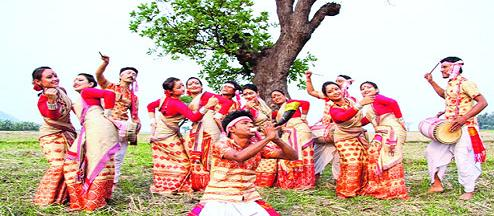

 Bihu is a regional festival of Assam. It is celebrated in three forms in a year.The fisrt bihu that is Bohagi bihu is celebrated in the month of April to mark the beginning of Assamese new year. Kati bihu is celebrated on the month of september to offer prayer to gods for a prosperous crop.Bhogali bihu is celebrated in the month of January to mark the celebration of post harvesting time